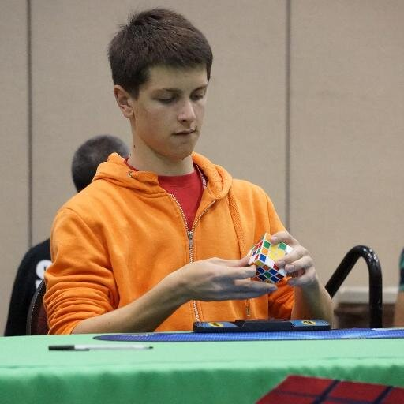

The amount of time it takes for the world record holders to solve a puzzle is astonishing. Feliks Zemdegs is an Australian speedcuber. He is arguably the fastest and most well-known speedcuber in the world, with the world record time for a single solve at 4.73 seconds. He holds 10 world records in total.
|  Feliks Zemdegs solving a 4x4 cube |
In order for a solve to be a valid world record, it must have been completed at an official competition. Otherwise, it is considered an unofficial world record. Speedcubing competitions are held all over the world by the World Cubing Association. In fact, they are held in Toronto every season.
There are two kinds of world record solves. A single is when you have the fastest time for one single solve in an average. An average is when you have the fastest average solve, which is calculated by solving the puzzle five times, dropping the worst and best solves, then averaging the three times that are left.
Here are some of world record holders along with their times:
| - | Single | Average |
|---|---|---|
| 2x2 | Maciej Czapiewski 0.49 | Lucas Etter 1.51 |
| 3x3 | Feliks Zemdegs 4.73 | Feliks Zemdegs 6.54 |
| 4x4 | Feliks Zemdegs 21.54 | Sebastian Weyer 25.96 |
| 3x3 One-Handed | Feliks Zemdegs 6.88 | Max Park 10.59 |
| Pyraminx | Drew Brads 1.32 | Drew Brads 2.14 |
| Skewb | Jonatan Klosko 1.10 | Michal Rzewuski 2.62 |